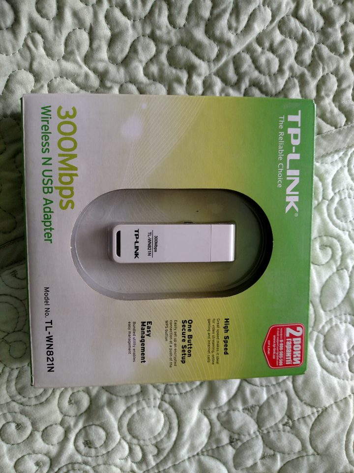

USB WiFi on bare metal

{kind=link}
The target laptop has a wireless part that cannot be driven the way a wireless part usually is, and the workaround introduces a driver whose finished and unfinished halves are worth separating carefully.
CNVi: the card is not a card
On this machine the wireless module is a radio and nothing else. The media access controller lives in the platform controller hub, and the interface between them is proprietary. There is no PCI device implementing a wireless controller to write a driver against, because the controller is part of the chipset and the module on the M.2 slot is the analogue end.
Driving it would mean implementing an undocumented chipset interface. The subsystem identifies the hardware, lists every network part on PCI and USB with what drives each, and refuses to pretend otherwise.
A USB dongle sidesteps all of it
An RTL8188EU dongle is an ordinary USB device with an ordinary bulk interface. Everything above the transport is written and checked at boot: probe request construction, beacon parsing, the transmit and receive descriptor layouts, and the WPA2 four-way handshake with its key derivation, all against published vectors.
What is missing is the transport in between. The link list table, the FIFO boundary that gates the media access controller's transmit and receive enables, channel selection, the efuse read, firmware upload, and handing a descriptor to a bulk endpoint. Bringing the chip up applies all four initialisation tables including the radio, over the serial interface the radio actually needs.
None of the chip-facing half can be exercised here, because the emulator has no model of the part. That is stated rather than implied, and the pieces that can be checked without hardware are checked at every boot.
Why the tables were copied, and why that is stated
One file in this tree is not original: the RTL8188EU initialisation tables plus the radio and descriptor register constants, taken from the GPL-2.0 driver in Linux because there is no other source for them. They are magic numbers with no derivation anywhere public.
That file is marked at the top, carries its own licence, is the only such file in the kernel, and a conversion script regenerates part of it from a checkout while stating its provenance. Copying it and not saying so would have been the easy option and would have been wrong.
Order is content
The initialisation tables are sequences of register writes, and their order carries as much information as their values. Reordering them for tidiness produces a chip that reports success and does not work. They are transcribed in order, and the script that regenerates them preserves order for the same reason.